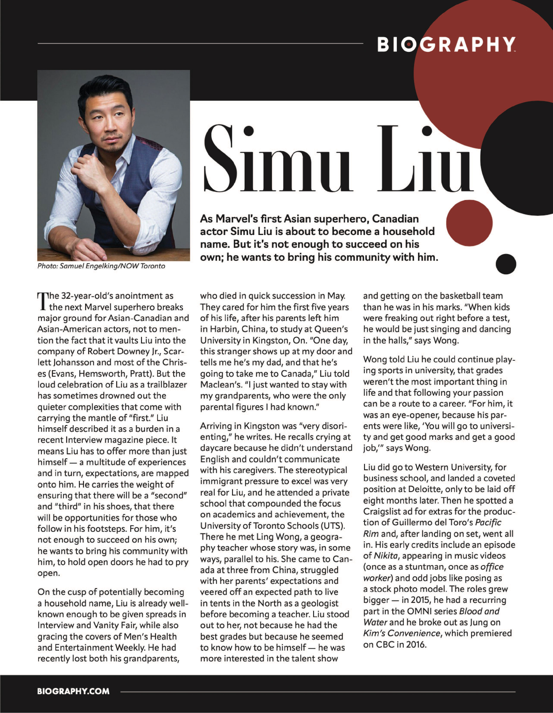
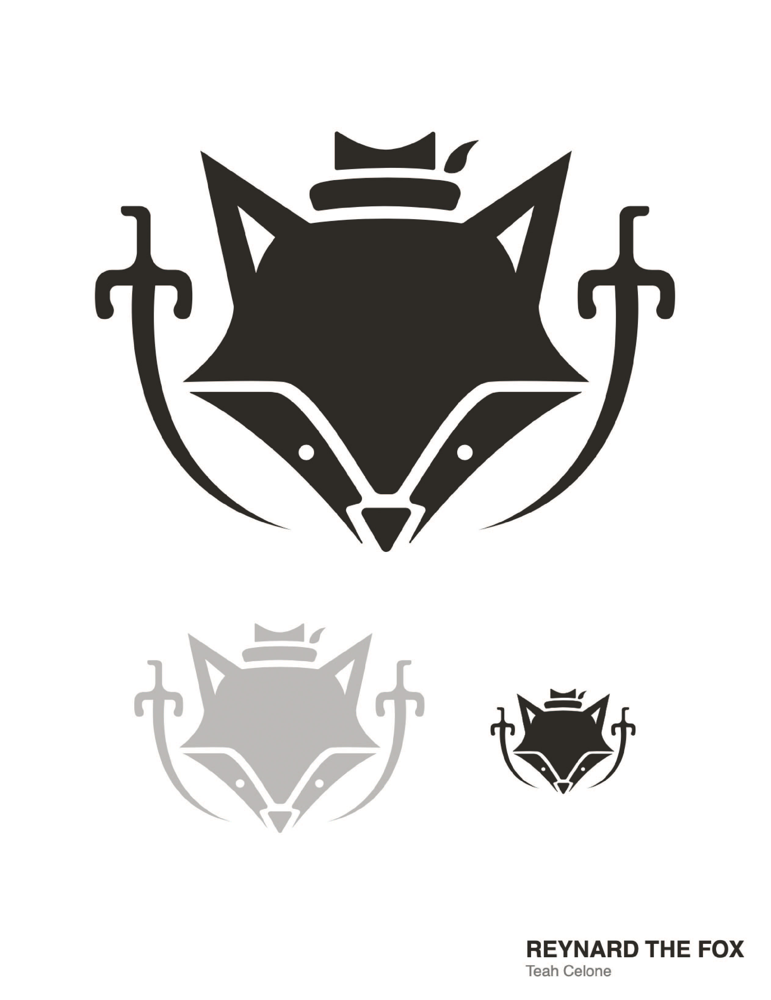
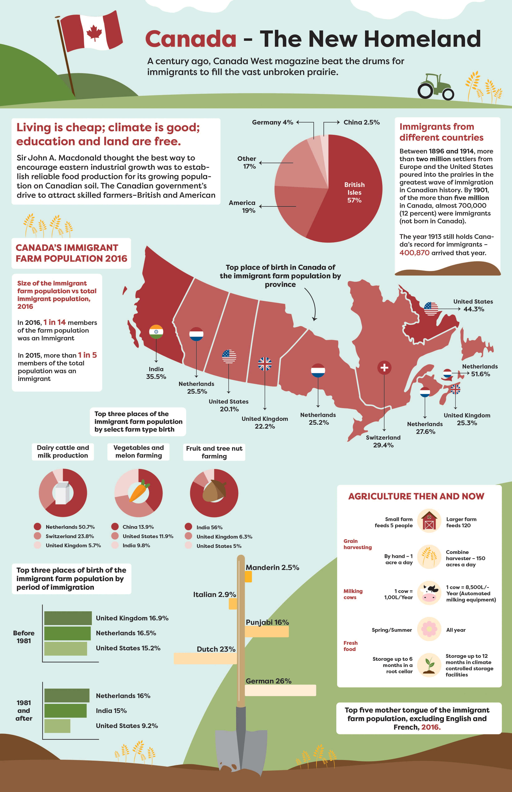
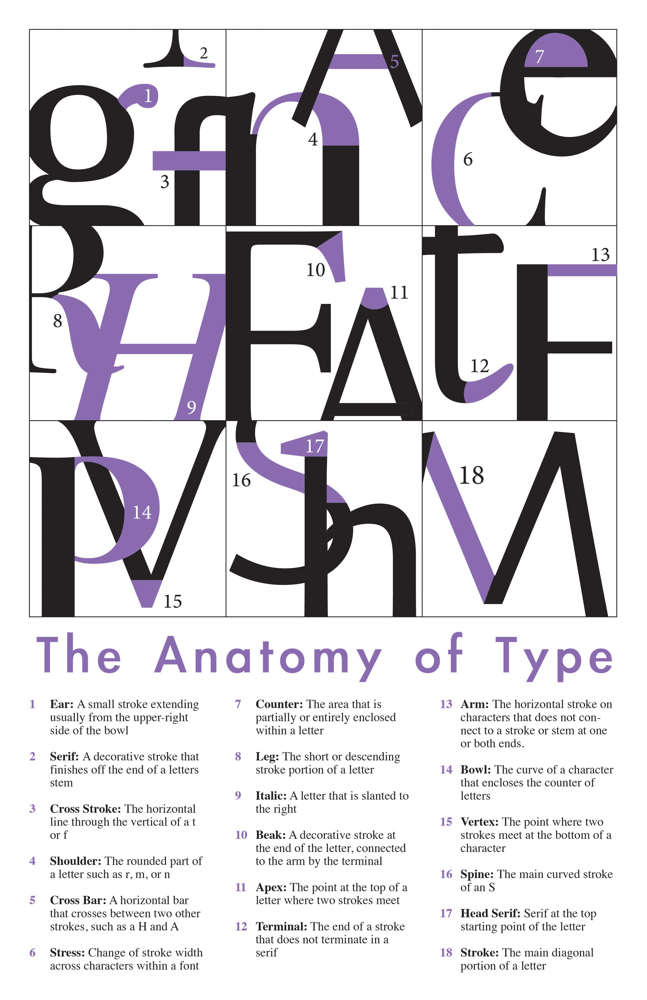

About Me
I've been creating art ever since I was young. I frequently used Adobe After Effects and Photoshop throughout high school, and really enjoyed it. I mainly used to do fine arts, like acrylic paintings, oil paintings and drawings, but I noticed digital software has many perks you can't get with traditional art. Between working with motion graphics to creating logos and stationary, I knew when it came to a job, I wanted to pursue design.
My Work



